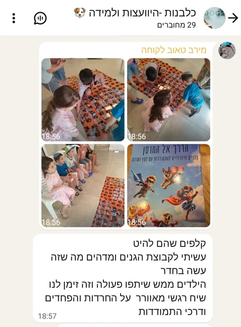
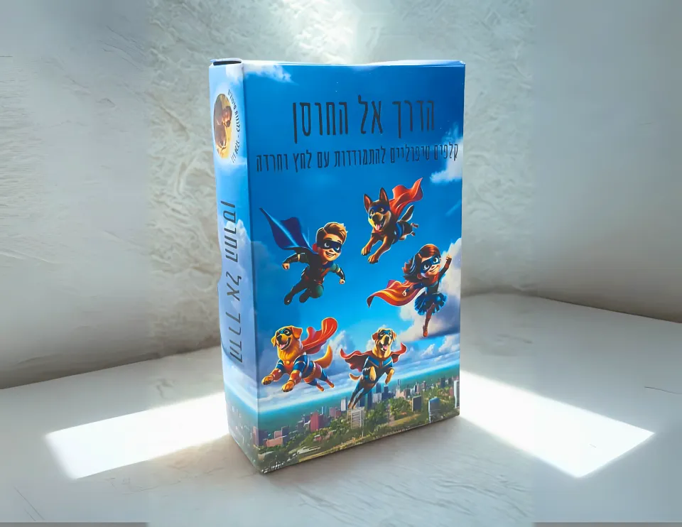
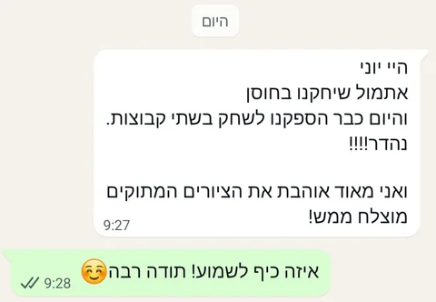
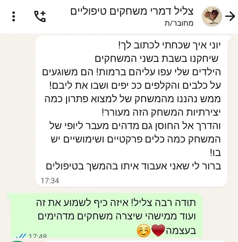

לקריאת ההמלצה המלאההילדים ממש שיתפו פעולה וזה זימן לנו שיח רגשי מאוורר על החרדות והפחדים ודרכי התמודדותהודעת WhatsApp
להכיר את מה שמלחיץ אותנו, להבין איך זה מרגיש בגוף ולנסות דרכים להירגע. קלפים שמחברים בין שיחה, משחק והתנסות.
165 ₪
משלוח עד הבית ב־35 ₪ בלבד · איסוף עצמי ללא עלות מבאר שבע
לפרטים ולהזמנה בוואטסאפ
לפעמים קל יותר להתחיל מקלף מאשר להסביר במילים מה עובר עלינו. ״הדרך אל החוסן״ מחבר בין מצבים שמעוררים לחץ וחרדה, התחושות שמופיעות בגוף והדרכים שיכולות לעזור לנו להירגע.
אפשר לבחור קלפים שמתחברים לחוויה האישית, לשוחח עליהם ולהתנסות יחד בשיטות רגיעה. המטרה היא להכיר את עצמנו ולגלות מה מתאים לכל אחד, בקצב שלו.
ליצור ״מסלול רגיעה״ ולהתנסות בשיטה בכל תחנה, לשחק בפנטומימה, לבנות סיפור משותף או לבחור קלפים לשיח אישי. מגיל 3 ומעלה. מתאים לעבודה פרטנית וגם לפעילות קבוצתית.
בונוס במארז: 4 שחקני כלבלבים צבעוניים וקובייה למשחק.
הודעות ותגובות על הדרך אל החוסן, במילים של מי שכתבו אותן.

לקריאת ההמלצה המלאההילדים ממש שיתפו פעולה וזה זימן לנו שיח רגשי מאוורר על החרדות והפחדים ודרכי התמודדותהודעת WhatsApp

לקריאת ההמלצה המלאהאני מאוד אוהבת את הציורים המתוקים, מוצלח ממשהודעת WhatsApp

לקריאת ההמלצה המלאהממש נהננו מהמשחק של למצוא פתרון כמה יצירתיות המשחק הזה מעורר!הודעת WhatsApp
בעזרת הקלפי חוסן שלך הצלחנו להגיע למצב שהיא מצליחה להסתכל על הפחדים, להתחיל לדבר עליהםהודעת WhatsApp
לפרטים על המפגשים, המשחקים והכלים — מוזמנים ליצור קשר.